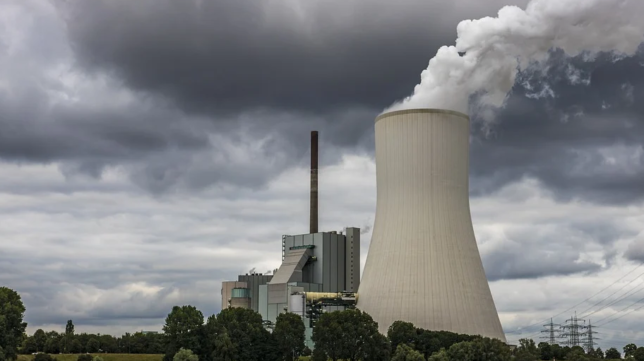

Technology shapes our world in complex ways - both helping and harming our environment. Join us as we explore the positive impacts, negative consequences, and emerging trends that will determine our sustainable future. Through data-driven insights and real-world examples, we'll understand how technology can be harnessed as a force for environmental good.
Technology's relationship with our environment is complex and multifaceted. Before diving deeper, let's understand the scale of this relationship through key metrics and trends that shape our digital world's environmental impact.
Our modern world runs on technology - from the smartphones in our pockets to the massive data centers powering our digital lives. This technological revolution brings both opportunities and challenges for environmental sustainability (Belkhir & Elmeligi, 2018).
Consider this: The tech sector now accounts for 4% of global greenhouse emissions - approximately 1.46 billion metric tons of CO2 annually (Freitag et al., 2021). Yet simultaneously, digital technologies could help reduce emissions by up to 20% by 2050 through smart technologies and optimization across industries (Malmodin & Bergmark, 2015).
metric tons of CO2 produced by the tech industry annually
As our digital world expands, understanding the energy footprint of technology becomes crucial. Here's how different sectors contribute to global tech energy consumption:
Data centers and communication networks account for 2-3% of global electricity consumption and 1% of greenhouse gas emissions.
The entire information and communication technology sector, including data centers, networks, and user devices, consumed about 915 TWh of electricity in 2020, representing 4-6% of global electricity use.
Globally, cryptocurrency mining consumed 110 TWh of electricity in 2022, with Bitcoin alone potentially consuming 125 TWh in 2024.
While precise figures are not available, estimates suggest that training large AI models like GPT-3 consumes between 1-2 TWh annually. However, this figure is expected to grow significantly as AI adoption increases.
That's comparable to the total electricity consumption of India, which was approximately 1,462 TWh in 2020.
The relationship between technology and the environment can be viewed from three main perspectives: positive contributions, challenges and costs, and future trends.
Technology has become a powerful force for environmental good, enabling solutions that were impossible just decades ago.
• Smart grid technology is helping us save energy. Studies by the U.S. Department of Energy (2021) show that smart grids can improve energy efficiency by up to 25%. This is a big step forward in how we manage and use power.
• Technology is helping protect wildlife in new ways. In Zambia, AI-powered tools like drones and cameras helped reduce illegal activities in protected areas by 52% (Wittemyer et al., 2022). The World Economic Forum (2023) also shows how blockchain technology is making carbon credit trading clearer and more trustworthy. These new tools are making a real difference in protecting nature.
The environmental cost of our digital revolution presents significant challenges that need addressing.
• Electronic waste is a big problem. According to Forti et al. (2020), we create 53.6 million metric tons of electronic waste every year. The United Nations University (2020) reports that less than 20% of this waste is properly recycled. This growing problem is bad for both the environment and human health.
• Making electronic devices harms the environment in several ways. Research by Belkhir & Elmeligi (2018) shows that making just one smartphone creates 60-70 kg of CO2 emissions. Chip factories use huge amounts of water - up to 10 million gallons of ultra-clean water every day (Merchant, 2022). Also, data centers, which we need for the internet to work, use about 1% of all electricity worldwide (International Energy Agency, 2021).
Emerging technologies and approaches are reshaping how we balance digital progress with environmental responsibility.
• Green Computing and Carbon-Aware Systems: These systems can change how much energy they use based on when renewable energy is available. This helps use less energy and reduce carbon emissions.
• Quantum Computing for Environmental Solutions: This new type of computing can solve complex environmental problems using much less energy than regular computers.
• Sustainable Infrastructure and Carbon-Negative Data Centers: Tech companies are building better data centers that not only use clean energy but also help remove CO2 from the air. This shows they're serious about helping the environment.
• Biodegradable Electronics and Energy-Harvesting Systems: New electronics are being made that can break down naturally, which helps reduce waste. Some devices can even power themselves using energy from their surroundings.
• AI and Environmental Science Together: By combining AI with environmental science, we can better understand and predict climate changes. AI helps us look at lots of environmental data quickly, which helps us fight climate change more effectively.
Here are some research papers and reports exploring the three perspectives of technology's environmental impact.
The Role of Smart Technologies in Environmental Conservation: An analysis of AI and its positive applications in Sustainability
Read PaperQuantifying the Environmental Impact of Technology: A comprehensive assessment of ICT Infrastructure
Read PaperNext-Generation Green Computing: Emerging Technologies and Their Environmental Implications Through 2050
Read PaperWhat percentage of global carbon emissions come from data centers?
Meet the passionate individuals behind TechEcology who are working to bridge the gap between technology and environmental sustainability.
10BSA
10BSA
10BSA
10BSA
10BSA
• Freitag, M., et al. (2021). The tech sector's greenhouse gas emissions: A global picture.
• Malmodin, J., & Bergmark, P. (2015). The energy and emissions footprint of the ICT sector.
• Wittemyer, G., et al. (2022). AI-powered conservation: A study of anti-poaching effectiveness.
• Forti, V., et al. (2020). The Global E-waste Monitor 2020.
• Merchant, B. (2022). Water consumption in semiconductor manufacturing.
• International Energy Agency. (2021). Data Centres and Data Transmission Networks.